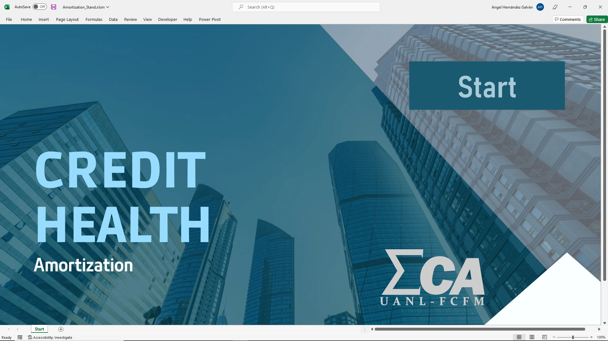
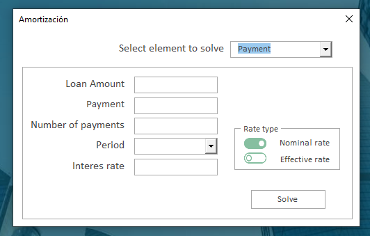
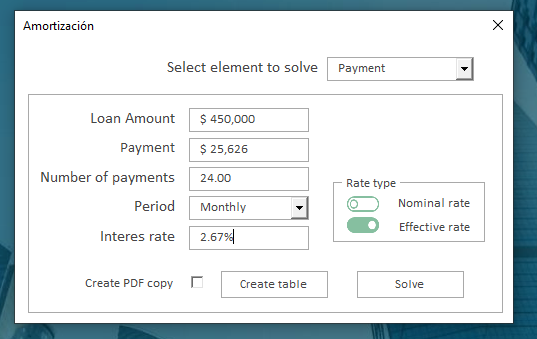
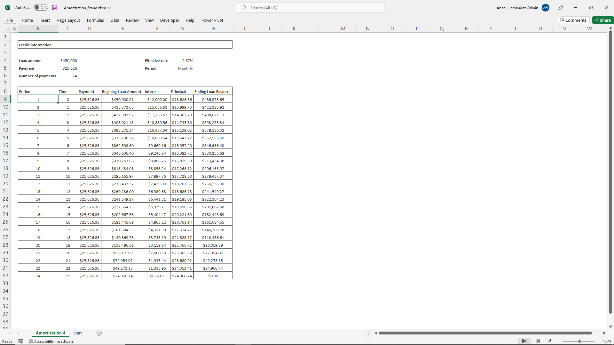
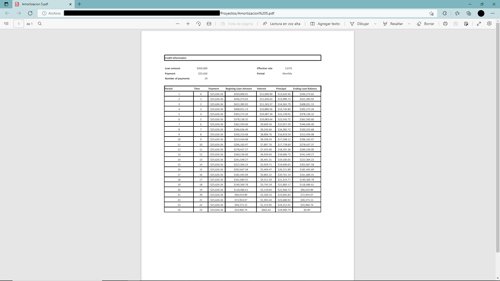

Process automation with Excel and VBA

Goal
This project was made for an actuarial divulgation expo. The expo consist in a conference were actuaries juniors talk about all topics relative to actuarial science to general public. Then, public can go to individual stands for every topic where they can ask specific questions or personal financial questions.The project was made for amortization stand, the goal was make and easy and fast way to show people how an amortization work and how they can improve his financial and credit decisions.

Functionality
Once the form start, there is a list to choose and element to calculate, the selection of the element in list will show the rest of form.  The full form ask for Loan Amount, Payment, Number of payments, Period, Interest rate and Rate type. The element selected in list will be locked. Form need to be responded and then can be solved with button Solve. Element selected and locked will show the calculated value, also interest rate will show as effective rate. Then a new botton show up with a checkbox, that botton create a new worksheet where an amortization table is printed, if checkbox is selected the form will export a PDF copy of the table.


Features
Process automation
Automatic creation of reports in excel worksheets and automatic creation of PDF reports
Modern-Looking Form
Automatic format
Automatic excel worksheets format with VBA
PDF export
Automatic creation of PDF file with contect created and calculated in excel